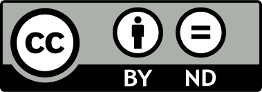

Open Science in the project lifecycle - evaluate & build
Learning Outcomes
Upon completion of this module, students will be able to:
- Summarize the role of CoARA in re-shaping researcher evaluation
- Identify future evaluation criteria for researchers and the importance of sharing all research outputs
Schedule
| Time | Topic | Instructor |
|---|---|---|
| 13:00 | Open Science in researcher evaluation practices | Ineke Luijten |
| 13:30 | Innovations in researcher evaluation - CoARA | Chris Erdmann |
| 14:30 | Coffee break | |
| 15:00 | Researcher evaluation: funders perspective | Sanna Isabel Ulfsparre & Amanda Klein |
| 16:30 | End of day |
Materials & Reuse
Open Science in researcher evaluation practices
Author(s): Ineke Luijten  , Joanna Sendecka
, Joanna Sendecka 
License: CC BY 4.0
DOI: https://doi.org/10.17044/scilifelab.29354012.v1
Citation: Luijten I, Sendecka J (2025). Open Science in the Swedish context - Open Science in researcher evaluation. SciLifeLab Training Hub. DOI: 10.17044/scilifelab.29354012.v1
Download: View in Google Slides | Make a Copy
Innovations in researcher evaluation - CoARA
Author(s): Christopher Erdmann 
License: CC BY 4.0
DOI: https://doi.org/10.17044/scilifelab.29354012.v1
Citation: Erdmann, C (2025). Open Science in the Swedish context - CoARA. SciLifeLab Data Centre. DOI: 10.17044/scilifelab.29354012.v1
Download: View in Google Slides | Make a Copy
Researcher evaluation: funders perspective
Author(s): Amanda Klein 
License: CC BY-ND 4.0
DOI: https://doi.org/10.17044/scilifelab.29354012.v1
Citation: Klein, A (2025). Open Science in the Swedish context - The review process at the Swedish Research Council. Vetenskapsrådet. DOI: 10.17044/scilifelab.29354012.v1
Download: Download a copy (PDF) | Download speaker notes (PDF)
Author(s): Sanna Isabel Ulfsparre 
License: CC BY-ND 4.0
DOI: https://doi.org/10.17044/scilifelab.29354012.v1
Citation: Ulfsparre, SI (2025). Open Science in the Swedish context - Open Science: a funders perspective. Vetenskapsrådet. DOI: 10.17044/scilifelab.29354012.v1
Download: Download a copy (PDF) | Download speaker notes (PDF)
License details
 You are free to share (copy and redistribute) and adapt (remix, transform, and build upon) this material for any purpose, even commercially — as long as you give appropriate credit to the original authors.
You are free to share (copy and redistribute) and adapt (remix, transform, and build upon) this material for any purpose, even commercially — as long as you give appropriate credit to the original authors.
